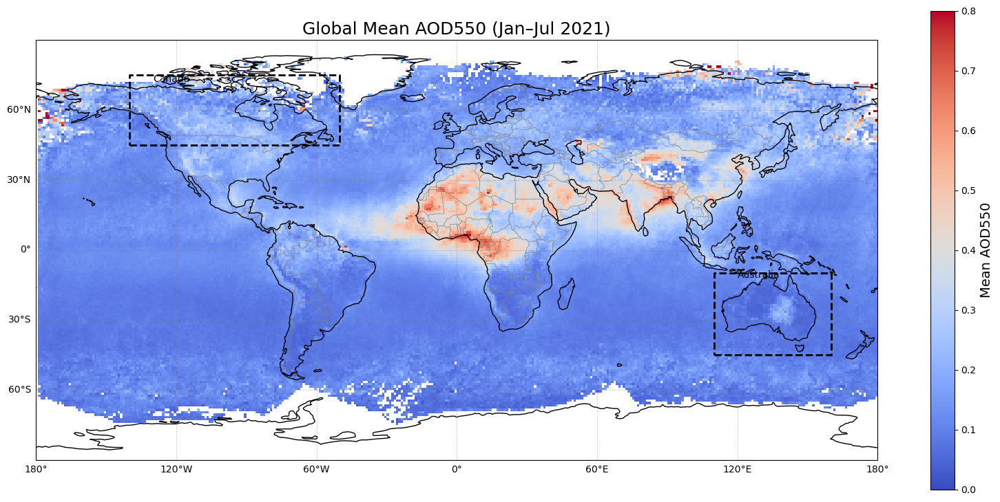
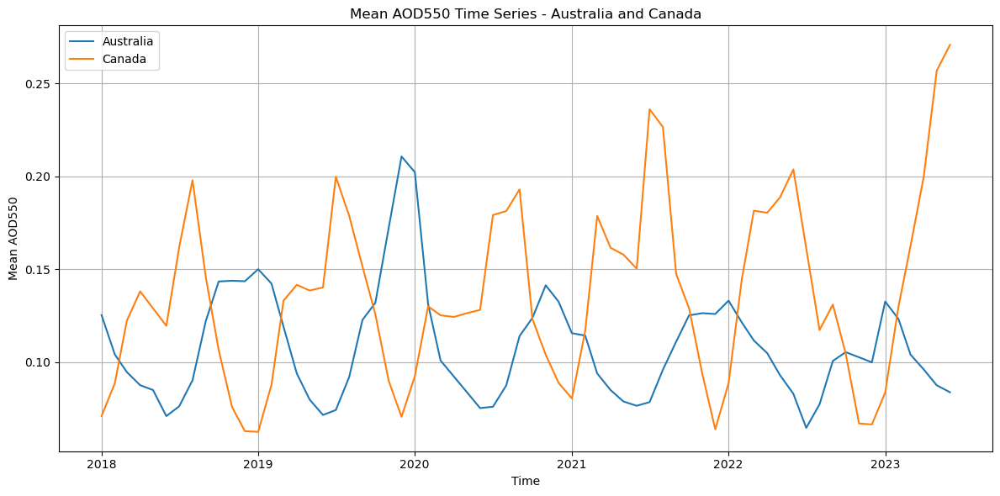
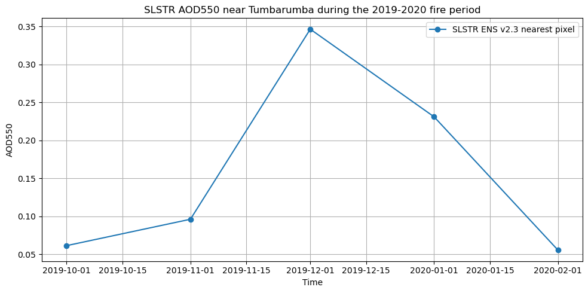
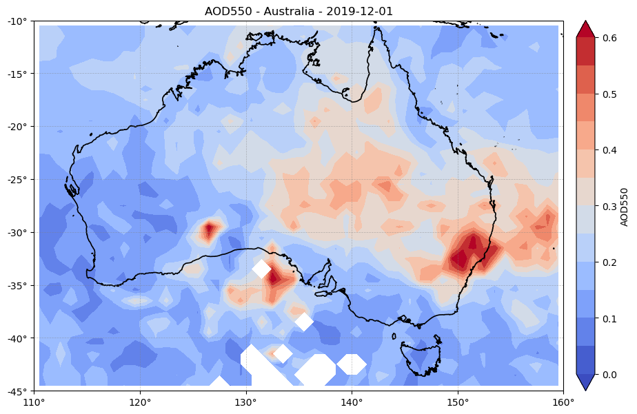
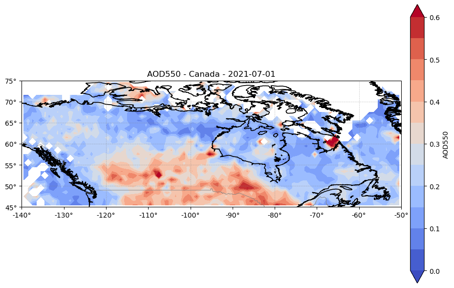
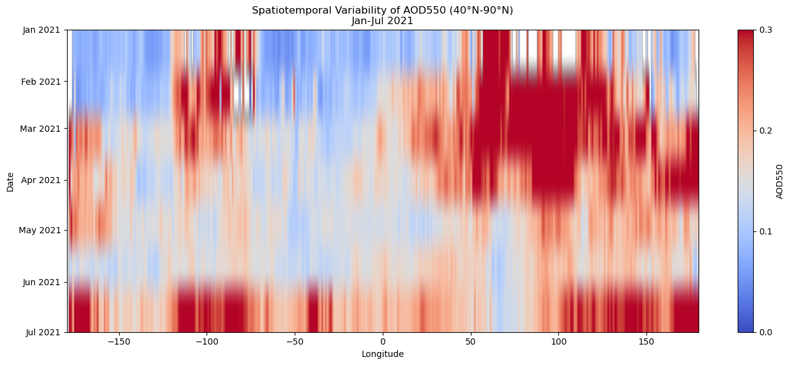

1.2.1. Assessment of spatial coverage of SLSTR AOD (1°) for monitoring the spatial variability of wildfire-related AOD in Canada and Australia (2018–2023)#
Production date: 30-09-2024
Produced by: Consiglio Nazionale delle Ricerche (CNR- Fabio Madonna and Faezeh Karimian.)
🌍 Use case: AOD Increase due to Wildfires from Satellite Observations#
❓ Quality assessment questions#
• Can satellite AOD data consistently detect seasonal wildfire-driven aerosol peaks?
• Is the spatial coverage of SLSTR AOD (1°) sufficient to study the spatial variability of wildfire-related AOD?
In the context of climate change and increasing wildfire activity, understanding the spatial and temporal distribution of aerosols from biomass burning is essential for assessing their environmental and climatic impacts. Seasonal variations in Aerosol Optical Depth (AOD) are strongly influenced by large-scale wildfires, such as those recently observed in Canada and Australia, which can inject smoke into the upper troposphere and even the lower stratosphere, with consequences for air quality, radiative forcing, and atmospheric circulation [1], [2], [3]. However, uncertainties in satellite data, including temporal consistency and retrieval sensitivity under dense smoke conditions, may affect the accuracy of such assessments [1].
This analysis uses the ensemble (ENS) aerosol product version 2.3 from the Climate Data Store (CDS) satellite aerosol properties dataset, derived from the SLSTR instrument aboard Sentinel-3. The ENS product combines the ORAC, SDV, and SU retrieval algorithms through uncertainty-weighted averaging and was selected because it represents the recommended merged product available through CDS. The dataset provides monthly gridded Aerosol Optical Depth (AOD) values at 550 nm with an approximate spatial resolution of 1° in NetCDF format, covering the period 2018–2023. The objective of this analysis is to investigate whether the dataset can capture temporal and spatial variations in aerosol loading associated with major wildfire events in Australia and Canada.
Here, the ability of SLSTR data to monitor fire-driven AOD variability is investigated in regions highly affected by wildfires, focusing on extreme fire seasons in Canada and Australia. The analysis considers both the seasonal patterns and the intensity of episodic events, aiming to determine whether current satellite-based products provide sufficient spatial and temporal resolution for reliable monitoring.
The results identify periods of enhanced AOD that coincide with documented wildfire seasons in the selected case studies. The analysis highlights the temporal and spatial variability of aerosol loading across the study regions, although further quantitative comparison with independent datasets would be required to assess the accuracy of these observations.
📢 Quality assessment statement#
These are the key outcomes of this assessment
The SLSTR aerosol data shows qualitative agreement with ground-based observations and Copernicus reports [5], [6] in terms of the timing of major wildfire events. However, a quantitative comparison with independent datasets is required to assess the accuracy of the retrieved AOD values.
The AOD dataset captures periods of enhanced aerosol loading associated with documented wildfire events in the selected case studies. Nevertheless, the ability to represent the full magnitude and temporal evolution of these events remains subject to uncertainties related to spatial averaging and data availability.
The presence of missing data for certain months (mainly during winter) in the longitude range between -100º and -80º represents a limitation of the dataset. These gaps occur close to periods of enhanced AOD and may affect the characterization of aerosol events, including their onset, duration, and peak intensity. As a result, interpretations in these regions should be treated with caution. It should also be noted that the present assessment focuses exclusively on the ENS v2.3 product. Since the CDS additionally provides the individual ORAC, SDV, and SU retrieval products, future work could investigate whether the limitations identified here, such as data gaps or differences during high-AOD events, are specific to the ensemble product or are common across retrieval algorithms. Such a comparison would provide further insight into the robustness of the retrieved aerosol signals.
📋 Methodology#
To assess whether the CDS Satellite Aerosol Properties dataset can capture aerosol variability associated with major wildfire events, we analysed the temporal and spatial evolution of Aerosol Optical Depth (AOD550) over two well-documented case studies: the 2019–2020 Australian Black Summer bushfires and the 2021 Canadian wildfire season. The analysis uses the ensemble (ENS) version 2.3 product from the CDS satellite aerosol properties dataset, derived from SLSTR observations aboard Sentinel-3. Rather than performing a full validation against independent reference observations, this notebook investigates whether the dataset reproduces the timing, spatial distribution, and magnitude of enhanced aerosol loading reported during major wildfire episodes.
More specifically, this notebook aims to:
Analyse the temporal evolution of regional mean AOD550 over Australia and Canada during the period 2018–2023. Identify periods of enhanced aerosol loading associated with documented wildfire events. Examine the spatial distribution of AOD550 during selected wildfire episodes. Assess the availability of AOD observations and discuss the potential impact of data gaps on the interpretation of aerosol events. Compare selected AOD peaks with values reported in the scientific literature and discuss known limitations of the dataset.
The methodology adopted for the analysis is split into the following steps:
Import the required Python packages.
Define the CDS dataset request and load the monthly AOD550 fields.
Spatial and temporal definitions
Study regions and large-scale AOD distribution
Define required functions
Plot time series for Canada and Australia
Quantitative comparison of AOD peaks with literature
Spatial analysis of wildfire events
Generate maps of AOD550 during selected wildfire episodes.
Spatiotemporal Variability of AOD550
Longitude–Time Evolution of AOD550 (40°N–90°N)
📈 Analysis and results#
Data preparation#
Import the required Python packages.#
In this section, the required Python libraries are imported to handle data processing, visualization, and geospatial analysis. These include tools for working with NetCDF files, numerical computations, and plotting time series and spatial maps of aerosol optical depth (AOD).
Show code cell source
Hide code cell source
import os
import numpy as np
import pandas as pd
import xarray as xr
import matplotlib.pyplot as plt
import seaborn as sns
from scipy.ndimage import gaussian_filter
import cartopy.crs as ccrs
import cartopy.feature as cfeature
Define the CDS dataset request and load the monthly AOD550 fields.#
In this step, the SLSTR AOD data files are loaded from local storage and combined into a single dataset for analysis. The data are stored as monthly NetCDF files, each corresponding to a specific time period.
The code loops through all available NetCDF files, extracts the timestamp from each filename, combines the files into a single xarray dataset, assigns the corresponding monthly time coordinates, replaces invalid values with missing values, and sorts the data chronologically. This structured dataframe is used for subsequent time series analysis and spatial visualization.
Show code cell source
Hide code cell source
request = {
"time_aggregation": "monthly_average",
"variable": ["aerosol_optical_depth"],
"sensor_on_satellite": ["slstr_on_sentinel_3a"],
"algorithm": "ens",
"version": "v2_3",
"format": "zip"
}
Show code cell source
Hide code cell source
import xarray as xr
import os
folder_path = "./aod_data"
file_list = sorted([
os.path.join(folder_path, f)
for f in os.listdir(folder_path)
if f.endswith(".nc")
])
ds = xr.open_mfdataset(file_list, combine="nested", concat_dim="time")
ds = ds.where(ds != -999.0)
times = [pd.to_datetime(os.path.basename(f)[:6], format="%Y%m") for f in file_list]
ds = ds.assign_coords(time=times)
print(ds)
<xarray.Dataset> Size: 68MB
Dimensions: (time: 66, latitude: 180, longitude: 360)
Coordinates:
* time (time) datetime64[ns] 528B 2018-01-01 ... 20...
* latitude (latitude) float32 720B -89.5 -88.5 ... 89.5
* longitude (longitude) float32 1kB -179.5 -178.5 ... 179.5
Data variables:
AOD550 (time, latitude, longitude) float32 17MB dask.array<chunksize=(1, 180, 360), meta=np.ndarray>
FM_AOD550 (time, latitude, longitude) float32 17MB dask.array<chunksize=(1, 180, 360), meta=np.ndarray>
AOD550_UNCERTAINTY_ENSEMBLE (time, latitude, longitude) float32 17MB dask.array<chunksize=(1, 180, 360), meta=np.ndarray>
NMEAS (time, latitude, longitude) float32 17MB dask.array<chunksize=(1, 180, 360), meta=np.ndarray>
Attributes: (12/18)
Conventions: CF-1.6
creator_email: thomas.popp@dlr.de
creator_name: German Aerospace Center, DFD
geospatial_lat_max: 90.0
geospatial_lat_min: -90.0
geospatial_lon_max: 180.0
... ...
sensor: SLSTR
standard_name_vocabulary: NetCDF Climate and Forecast (CF) Metadata Conv...
summary: Level 3 aerosol properties retreived using sat...
title: Ensemble aerosol product level 3
tracking_id: db1b02a2-a740-11ee-aafe-0050569370b0
version: v2.3
Spatial and temporal definitions#
To investigate the spatiotemporal variability of wildfire-driven aerosols, the dataset was filtered both temporally and geographically. A time window was defined from January 2018 to June 2023 to cover multiple fire seasons, including extreme events in Australia (2019–2020) and Canada (2021). Spatial subsetting was then applied to isolate two regions of interest: Australia (latitudes –45° to –10°, longitudes 110° to 155°) and Canada (latitudes 45° to 75°, longitudes –140° to –50°). These filters allow for a focused analysis of AOD patterns associated with wildfire activity in regions known for severe biomass burning episodes.
Show code cell source
Hide code cell source
ds = ds.sel(time=slice("2018-01-01", "2023-06-01"))
australia_ds = ds.sel(
latitude=slice(-45, -10),
longitude=slice(110, 155)
)
print(australia_ds)
canada_ds = ds.sel(
latitude=slice(45, 75),
longitude=slice(-140, -50)
)
print(canada_ds)
<xarray.Dataset> Size: 2MB
Dimensions: (time: 66, latitude: 35, longitude: 45)
Coordinates:
* time (time) datetime64[ns] 528B 2018-01-01 ... 20...
* latitude (latitude) float32 140B -44.5 -43.5 ... -10.5
* longitude (longitude) float32 180B 110.5 111.5 ... 154.5
Data variables:
AOD550 (time, latitude, longitude) float32 416kB dask.array<chunksize=(1, 35, 45), meta=np.ndarray>
FM_AOD550 (time, latitude, longitude) float32 416kB dask.array<chunksize=(1, 35, 45), meta=np.ndarray>
AOD550_UNCERTAINTY_ENSEMBLE (time, latitude, longitude) float32 416kB dask.array<chunksize=(1, 35, 45), meta=np.ndarray>
NMEAS (time, latitude, longitude) float32 416kB dask.array<chunksize=(1, 35, 45), meta=np.ndarray>
Attributes: (12/18)
Conventions: CF-1.6
creator_email: thomas.popp@dlr.de
creator_name: German Aerospace Center, DFD
geospatial_lat_max: 90.0
geospatial_lat_min: -90.0
geospatial_lon_max: 180.0
... ...
sensor: SLSTR
standard_name_vocabulary: NetCDF Climate and Forecast (CF) Metadata Conv...
summary: Level 3 aerosol properties retreived using sat...
title: Ensemble aerosol product level 3
tracking_id: db1b02a2-a740-11ee-aafe-0050569370b0
version: v2.3
<xarray.Dataset> Size: 3MB
Dimensions: (time: 66, latitude: 30, longitude: 90)
Coordinates:
* time (time) datetime64[ns] 528B 2018-01-01 ... 20...
* latitude (latitude) float32 120B 45.5 46.5 ... 73.5 74.5
* longitude (longitude) float32 360B -139.5 ... -50.5
Data variables:
AOD550 (time, latitude, longitude) float32 713kB dask.array<chunksize=(1, 30, 90), meta=np.ndarray>
FM_AOD550 (time, latitude, longitude) float32 713kB dask.array<chunksize=(1, 30, 90), meta=np.ndarray>
AOD550_UNCERTAINTY_ENSEMBLE (time, latitude, longitude) float32 713kB dask.array<chunksize=(1, 30, 90), meta=np.ndarray>
NMEAS (time, latitude, longitude) float32 713kB dask.array<chunksize=(1, 30, 90), meta=np.ndarray>
Attributes: (12/18)
Conventions: CF-1.6
creator_email: thomas.popp@dlr.de
creator_name: German Aerospace Center, DFD
geospatial_lat_max: 90.0
geospatial_lat_min: -90.0
geospatial_lon_max: 180.0
... ...
sensor: SLSTR
standard_name_vocabulary: NetCDF Climate and Forecast (CF) Metadata Conv...
summary: Level 3 aerosol properties retreived using sat...
title: Ensemble aerosol product level 3
tracking_id: db1b02a2-a740-11ee-aafe-0050569370b0
version: v2.3
Study regions and large-scale AOD distribution#
The analysis focuses on two major wildfire case studies: the 2019–2020 Black Summer bushfires in Australia and the 2021 wildfire season in Canada. To provide geographical context, the following figure shows the global distribution of mean AOD550 derived from the SLSTR ENS v2.3 product for January–July 2021, together with the study regions selected for detailed investigation. The map is included to illustrate the location of the Australia and Canada domains within the broader global aerosol environment and does not constitute a quantitative assessment of wildfire impacts.
Show code cell source
Hide code cell source
ds_sel = ds.sel(
time=slice("2021-01-01", "2021-07-31"),
)
aod = ds_sel["AOD550"]
aod = aod.where(aod != -999.0)
mean_map = aod.mean(dim="time")
lats = mean_map["latitude"].values
lons = mean_map["longitude"].values
Z = mean_map.values
vmin, vmax = 0.0, 0.8
levels = np.arange(vmin, vmax + 0.1, 0.1)
fig = plt.figure(figsize=(16, 9))
ax = plt.axes(projection=ccrs.PlateCarree())
ax.set_extent([-180, 180, -90, 90], crs=ccrs.PlateCarree())
LON, LAT = np.meshgrid(lons, lats)
mesh = ax.pcolormesh(
LON, LAT, Z,
cmap='coolwarm',
vmin=vmin,
vmax=vmax,
transform=ccrs.PlateCarree(),
shading='auto'
)
ax.coastlines(resolution='110m', linewidth=1, color='black')
ax.add_feature(cfeature.BORDERS, linewidth=0.5, edgecolor='gray')
ax.plot([110,160,160,110,110], [-45,-45,-10,-10,-45],
color='black', linewidth=2, linestyle='--', transform=ccrs.PlateCarree())
ax.text(120, -12, "Australia", transform=ccrs.PlateCarree())
ax.plot([-140,-50,-50,-140,-140], [45,45,75,75,45],
color='black', linewidth=2, linestyle='--', transform=ccrs.PlateCarree())
ax.text(-130, 72, "Canada", transform=ccrs.PlateCarree())
cbar = plt.colorbar(mesh, ax=ax, orientation='vertical', shrink=0.8, ticks=levels)
cbar.set_label("Mean AOD550", fontsize=14)
ax.set_title("Global Mean AOD550 (Jan–Jul 2021)", fontsize=18)
ax.set_xlabel("Longitude", fontsize=14)
ax.set_ylabel("Latitude", fontsize=14)
gl = ax.gridlines(draw_labels=True, linewidth=0.5, color="gray", alpha=0.5, linestyle="--")
gl.top_labels = False
gl.right_labels = False
plt.tight_layout()
plt.show()

Figure 1. Global mean AOD550 derived from the SLSTR ENS v2.3 product for January–July 2021.
Values represent the temporal average of monthly AOD550 observations over the selected period. Dashed boxes indicate the Australia and Canada study regions analysed in this notebook. The figure is included to provide geographical context for the case studies and to illustrate the large-scale distribution of aerosol loading during the analysis period.
Define required functions#
The following functions are defined to support the analysis and visualization of SLSTR aerosol data. They are used to extract AOD values for a selected date and region, organize the data on its original latitude-longitude grid, and generate spatial maps.
Show code cell source
Hide code cell source
import numpy as np
import pandas as pd
import matplotlib.pyplot as plt
from scipy.ndimage import gaussian_filter
import cartopy.crs as ccrs
import cartopy.feature as cfeature
import cartopy.io.shapereader as shpreader
from cartopy.mpl.ticker import LongitudeFormatter, LatitudeFormatter
def _fill_nearest_2d(Z, n_iter=3):
Z = Z.copy()
for _ in range(n_iter):
mask = np.isnan(Z)
if not mask.any():
break
Zpad = np.pad(Z, 1, mode="edge")
nb = np.stack([
Zpad[:-2, 1:-1], # north
Zpad[2:, 1:-1], # south
Zpad[1:-1, :-2], # west
Zpad[1:-1, 2:] # east
])
valid = ~np.isnan(nb)
count = valid.sum(axis=0)
summed = np.nansum(nb, axis=0)
nb_mean = np.full_like(Z, np.nan, dtype=float)
has_neighbors = count > 0
nb_mean[has_neighbors] = summed[has_neighbors] / count[has_neighbors]
valid_fill = mask & has_neighbors
if not valid_fill.any():
break
Z[valid_fill] = nb_mean[valid_fill]
return Z
def native_field_from_ds(ds, date, region, var="AOD550"):
min_lon, max_lon, min_lat, max_lat = region
date = pd.to_datetime(date)
sub = ds[var].sel(time=date).sel(
latitude=slice(min_lat, max_lat),
longitude=slice(min_lon, max_lon)
)
if sub.size == 0:
raise ValueError(f"No {var} on {date.date()} in {region}")
lon = sub["longitude"].values
lat = sub["latitude"].values
Z = sub.values
return lon, lat, Z
def plot_native_map(
ds, date, region, region_name, var="AOD550",
vmin=0.0, vmax=0.6, levels=None,
shapefile_path=None,
lon_step=10, lat_step=5
):
if levels is None:
levels = np.linspace(vmin, vmax, 13)
lon, lat, Z = native_field_from_ds(ds, date, region, var)
LON, LAT = np.meshgrid(lon, lat)
fig = plt.figure(figsize=(10, 6))
ax = plt.axes(projection=ccrs.PlateCarree())
ax.set_extent(region, crs=ccrs.PlateCarree())
cf = ax.contourf(
LON, LAT, Z,
levels=levels,
cmap="coolwarm",
vmin=vmin,
vmax=vmax,
extend="both",
transform=ccrs.PlateCarree()
)
if shapefile_path:
reader = shpreader.Reader(shapefile_path)
ax.add_geometries(
reader.geometries(),
crs=ccrs.PlateCarree(),
facecolor="none",
edgecolor="black",
linewidth=1.2
)
else:
ax.add_feature(
cfeature.COASTLINE.with_scale("10m"),
linewidth=1.2,
edgecolor="black"
)
ax.add_feature(
cfeature.BORDERS.with_scale("10m"),
linewidth=0.6,
edgecolor="gray"
)
cbar = plt.colorbar(
cf,
ax=ax,
pad=0.02,
ticks=np.linspace(vmin, vmax, 7)
)
cbar.set_label(var)
min_lon, max_lon, min_lat, max_lat = region
ax.gridlines(
draw_labels=False,
linewidth=0.5,
color="gray",
alpha=0.5,
linestyle="--"
)
ax.set_xticks(
np.arange(
np.floor(min_lon / lon_step) * lon_step,
np.ceil(max_lon / lon_step) * lon_step + 0.1,
lon_step
),
crs=ccrs.PlateCarree()
)
ax.set_yticks(
np.arange(
np.floor(min_lat / lat_step) * lat_step,
np.ceil(max_lat / lat_step) * lat_step + 0.1,
lat_step
),
crs=ccrs.PlateCarree()
)
ax.xaxis.set_major_formatter(
LongitudeFormatter(
number_format=".0f",
degree_symbol="°",
direction_label=False
)
)
ax.yaxis.set_major_formatter(
LatitudeFormatter(
number_format=".0f",
degree_symbol="°",
direction_label=False
)
)
ax.set_title(
f"{var} - {region_name} - {pd.to_datetime(date).date()}"
)
plt.tight_layout()
plt.show()
Regional time-series analysis#
Plot time series for Canada and Australia#
The following code generates a time series of the monthly mean Aerosol Optical Depth (AOD550) for Australia and Canada over the study period (2018–2023).
For each region, the AOD values are averaged over all grid points for each month, producing a single representative value per time step. This allows comparison of temporal variability and identification of seasonal patterns and extreme aerosol events, particularly those associated with major wildfire episodes.
Show code cell source
Hide code cell source
# Compute regional mean time series
ts_aus = australia_ds["AOD550"].mean(dim=["latitude", "longitude"])
ts_can = canada_ds["AOD550"].mean(dim=["latitude", "longitude"])
# Plot time series
plt.figure(figsize=(12, 6))
plt.plot(ts_aus["time"], ts_aus, label="Australia")
plt.plot(ts_can["time"], ts_can, label="Canada")
plt.title("Mean AOD550 Time Series - Australia and Canada")
plt.xlabel("Time")
plt.ylabel("Mean AOD550")
plt.legend()
plt.grid(True)
plt.tight_layout()
plt.show()

Figure 2. Time series of monthly mean AOD550 for Australia and Canada over the 2018–2023 period.
This figure shows the monthly mean Aerosol Optical Depth (AOD550) time series for Australia and Canada between 2018 and mid-2023. The time series highlights seasonal cycles and episodic peaks associated with major wildfire events, with AOD550 values consistently higher during fire seasons.
Quantitative comparison of AOD peaks with literature#
To assess whether the SLSTR ENS v2.3 product reproduces the timing and magnitude of the Black Summer wildfire event, AOD550 values were extracted from the grid cell closest to the Tumbarumba AERONET station (35.5°S, 148.5°E), one of the locations analysed by Li et al. (2021). Unlike the regional averages presented previously, this comparison uses a single SLSTR grid cell without additional spatial smoothing in order to maximise consistency with the point-based observations reported in the literature. The resulting monthly time series is used to compare the temporal evolution of aerosol loading during the 2019–2020 fire season with values reported from independent ground-based measurements. [5] , [6].
Show code cell source
Hide code cell source
tumbarumba_lat = -35.6566
tumbarumba_lon = 148.1517
slstr_tumbarumba = ds["AOD550"].sel(
latitude=tumbarumba_lat,
longitude=tumbarumba_lon,
method="nearest"
)
slstr_tumbarumba = slstr_tumbarumba.where(slstr_tumbarumba != -999.0)
# Select wildfire period
slstr_tumbarumba_event = slstr_tumbarumba.sel(
time=slice("2019-10-01", "2020-02-01")
).compute()
print(slstr_tumbarumba_event)
print("Closest SLSTR latitude:", float(slstr_tumbarumba_event.latitude))
print("Closest SLSTR longitude:", float(slstr_tumbarumba_event.longitude))
<xarray.DataArray 'AOD550' (time: 5)> Size: 20B
array([0.06136374, 0.09609616, 0.34630984, 0.23093791, 0.05550185],
dtype=float32)
Coordinates:
* time (time) datetime64[ns] 40B 2019-10-01 2019-11-01 ... 2020-02-01
latitude float32 4B -35.5
longitude float32 4B 148.5
Attributes:
long_name: Aerosol optical depth at 550 nm
standard_name: atmosphere_optical_depth_due_to_ambient_aerosol
Closest SLSTR latitude: -35.5
Closest SLSTR longitude: 148.5
Show code cell source
Hide code cell source
plt.figure(figsize=(10, 5))
plt.plot(
slstr_tumbarumba_event["time"],
slstr_tumbarumba_event,
marker="o",
label="SLSTR ENS v2.3 nearest pixel"
)
plt.title("SLSTR AOD550 near Tumbarumba during the 2019-2020 fire period")
plt.xlabel("Time")
plt.ylabel("AOD550")
plt.grid(True)
plt.legend()
plt.tight_layout()
plt.show()

Figure 3. Monthly mean AOD550 from the SLSTR ENS v2.3 product at the grid cell nearest to the Tumbarumba AERONET station (35.5°S, 148.5°E) during October 2019–February 2020. A pronounced peak is observed in December 2019, coinciding with the period of intense aerosol loading associated with the Australian Black Summer wildfires.
Show code cell source
Hide code cell source
slstr_peak_value = float(slstr_tumbarumba_event.max())
slstr_peak_time = pd.to_datetime(
slstr_tumbarumba_event["time"][slstr_tumbarumba_event.argmax(dim="time")].values
)
print("SLSTR peak AOD550:", slstr_peak_value)
print("SLSTR peak month:", slstr_peak_time)
SLSTR peak AOD550: 0.3463098406791687
SLSTR peak month: 2019-12-01 00:00:00
The SLSTR ENS v2.3 time series exhibits a pronounced increase in aerosol loading during the Black Summer wildfire period, with a maximum AOD550 of approximately 0.35 observed in December 2019. Li et al. (2021) reported AERONET AOD440 values reaching up to 2.76 during intense smoke episodes at Tumbarumba. The lower values observed in the SLSTR product are expected because the satellite data represent monthly mean aerosol conditions over a ~1° grid cell, whereas AERONET observations are point measurements capable of capturing short-lived local maxima. Despite these differences in spatial and temporal representativeness, both datasets identify December 2019–January 2020 as the period of strongest aerosol loading.
In addition, the Product Quality Assessment Report (PQAR) indicates that for AERONET AOD values exceeding approximately 1.0, the SLSTR retrieval tends to underestimate high aerosol loading conditions. This behaviour may partly explain the difference between the extreme AERONET observations reported during the Australian wildfire event and the lower values observed in the monthly averaged SLSTR dataset. Consequently, the comparison suggests that the SLSTR product captures the timing of the major smoke event, while underestimating the magnitude of the most extreme aerosol concentrations. [5] , [6].
Spatial analysis of wildfire events#
Generate maps of AOD550 during selected wildfire episodes.#
The following code generates a map of monthly mean AOD550 over Australia for December 2019 using the original ENS v2.3 data on its native grid. The objective is to examine the spatial distribution of aerosol loading during the Black Summer wildfire season and to identify the regions contributing most strongly to the regional aerosol enhancement observed in the time series analysis.
Show code cell source
Hide code cell source
# Australia — DEC 2019 (matches the example month with higher AOD)
plot_native_map(
ds,
date="2019-12-01",
region=(110, 160, -45, -10),
region_name="Australia",
var="AOD550",
vmin=0.0, vmax=0.6
)

Figure 4. Spatial distribution of AOD550 over Australia on 2019-12-01, derived from SLSTR (Sentinel-3) data at ~1° resolution.
The map shows the spatial distribution of monthly mean AOD550 over Australia in December 2019, during the Black Summer wildfire season. Elevated AOD values are observed across southeastern Australia, with the highest concentrations located along the eastern and southeastern regions of the continent. Unlike the regional mean time series, this map provides spatial information on the distribution of aerosol loading and identifies the specific areas contributing to the regional AOD enhancement. The figure is intended to illustrate the geographical extent and spatial heterogeneity of the aerosol signal during a major wildfire episode. [6].
The following code generates a spatial map of Aerosol Optical Depth (AOD550) over Canada for July 2021, corresponding to a period of intense wildfire activity. The data are extracted for the selected date and region, and plotted on their native grid to visualize the spatial distribution of aerosol concentrations. This enables the identification of regions affected by elevated AOD associated with wildfire smoke.
Show code cell source
Hide code cell source
# Canada — JUL 2021
plot_native_map(
ds,
date="2021-07-01",
region=(-140, -50, 45, 75),
region_name="Canada",
var="AOD550",
vmin=0.0, vmax=0.6
)

Figure 5. Spatial distribution of AOD550 over Canada on 2021-07-01, derived from SLSTR (Sentinel-3) data at ~1° resolution.
The map shows the spatial distribution of monthly mean AOD550 over Canada in July 2021. Elevated AOD values are observed across parts of western and central Canada, indicating substantial spatial variability in aerosol loading within the study region. The figure complements the regional mean time series by identifying the areas that contribute most strongly to the regional AOD signal. July 2021 corresponds to a period of documented wildfire activity in Canada; however, the present analysis does not allow attribution of the observed AOD enhancements exclusively to wildfire emissions. Establishing such a link would require a quantitative comparison with independent information, such as fire occurrence records, burned-area products, atmospheric transport analyses, or other aerosol observations. Therefore, the figure should be interpreted as evidence of enhanced aerosol loading during this period rather than as direct proof of wildfire-related emissions. [5].
Spatiotemporal Variability of AOD550#
Longitude–Time Evolution of AOD550 (40°N–90°N)#
The following analysis shows the longitude–time evolution of mean AOD550 between January and July 2021 in the latitude band 40°N–90°N. The data are averaged over latitude to produce a Hovmöller-style diagram, which summarizes how aerosol loading varies with longitude and time across the Northern Hemisphere. This figure is intended to provide a broad view of zonal AOD variability and should not be interpreted as direct evidence of smoke transport from a specific wildfire source without additional transport or trajectory analysis.
Show code cell source
Hide code cell source
# Select latitude band and time period
ds_2021 = ds.sel(
latitude=slice(40, 90),
time=slice("2021-01-01", "2021-07-01")
)
# Extract AOD and average over latitude to build a longitude-time curtain
curtain_2021 = ds_2021["AOD550"].where(ds_2021["AOD550"] != -999.0).mean(dim="latitude")
vmin, vmax = 0.0, 0.3
levels = np.arange(vmin, vmax + 0.1, 0.1)
fig, ax = plt.subplots(figsize=(14, 6))
c = ax.imshow(
curtain_2021.values,
aspect="auto",
cmap="coolwarm",
vmin=vmin,
vmax=vmax,
extent=[
curtain_2021["longitude"].min().item(),
curtain_2021["longitude"].max().item(),
curtain_2021["time"].max().values.astype("datetime64[D]").astype(int),
curtain_2021["time"].min().values.astype("datetime64[D]").astype(int),
]
)
cbar = plt.colorbar(c, label="AOD550", ax=ax, ticks=levels)
ax.set_title("Spatiotemporal Variability of AOD550 (40°N-90°N)\nJan-Jul 2021")
ax.set_xlabel("Longitude")
ax.set_ylabel("Date")
ticks = pd.date_range("2021-01-01", "2021-07-01", freq="MS")
ax.set_yticks(ticks.values.astype("datetime64[D]").astype(int))
ax.set_yticklabels([d.strftime("%b %Y") for d in ticks])
plt.tight_layout()
plt.show()

Figure 6. Hovmöller-style longitude–time diagram of mean AOD550 between January and July 2021 over 40°N–90°N. Warm colours indicate longitudes and periods with enhanced aerosol loading. The figure provides a large-scale view of zonal AOD variability, but it does not by itself attribute the observed enhancements to Canadian wildfire smoke or demonstrate transport pathways.
The diagram shows enhanced AOD values at several longitude ranges during the analysis period, with some of the strongest signals occurring at longitudes corresponding to Siberia. Lower AOD values are observed over the Atlantic and European longitudes, meaning that the figure does not provide continuous evidence of aerosol transport from Canada across the Northern Hemisphere. Therefore, the interpretation is limited to large-scale zonal variability in AOD550, and attribution to specific wildfire smoke plumes would require additional evidence such as fire occurrence data, atmospheric transport modelling, or trajectory analysis [6].
Take-Home Messages#
Consistency with literature: Periods of enhanced AOD identified in the SLSTR ENS v2.3 dataset coincide with major wildfire seasons reported in the literature and by Copernicus Atmosphere Monitoring Service [5], [6]. A comparison with observations from the Tumbarumba AERONET station indicates that the dataset captures the timing of the Black Summer wildfire event, although the magnitude of extreme aerosol loading is underestimated relative to local observations.
Detection of wildfire-related variability: The regional time series show pronounced increases in AOD during periods associated with major wildfire activity, including December 2019 in Australia and summer 2021 in Canada. These results indicate that the dataset captures temporal variability consistent with documented wildfire seasons, although a comprehensive quantitative validation was beyond the scope of this assessment.
Impact of missing data: The analysis reveals the presence of spatial and temporal gaps in AOD observations, particularly at high latitudes and during specific periods. These gaps may affect the characterization of aerosol events, especially when they occur close to periods of missing observations, and should therefore be considered when interpreting the results.
Spatial and spatiotemporal variability: Regional maps and longitude–time analyses reveal substantial spatial and temporal variability in AOD550. These visualizations help identify periods and regions of enhanced aerosol loading; however, attribution to specific transport pathways or wildfire smoke plumes would require additional evidence, such as atmospheric transport modelling or trajectory analysis.
Scope and limitations of the assessment: This study provides a qualitative assessment of the ability of the SLSTR ENS v2.3 product to represent spatial and temporal variations in aerosol loading associated with major wildfire seasons. A more comprehensive evaluation would require systematic comparison with independent reference datasets (e.g. AERONET and other satellite products) and the use of quantitative performance metrics.
ℹ️ If you want to know more#
Key Resources#
• Aerosol properties gridded data from 1995 to present derived from satellite observations:
https://cds.climate.copernicus.eu/datasets/satellite-aerosol-properties?tab=overview
Code libraries used:
• C3S EQC custom function, c3s_eqc_automatic_quality_control, prepared by B-Open
References#
[1] Popp, T., et al. (2016). Development, production and evaluation of aerosol climate data records from European satellite observations (Aerosol_cci). Remote Sensing, 8(5), 421.
[2] Peterson, D. A., et al. (2018). Wildfire-driven thunderstorms cause a volcano-like stratospheric injection of smoke. npj Climate and Atmospheric Science, 1, 30.
[3] Sogacheva, L., Denisselle, M., Kolmonen, P., Virtanen, T. H., & Dransfeld, S. (2022). Extended validation and evaluation of the OLCI–SLSTR Synergy aerosol product (SY_2_AOD) on Sentinel-3. Atmospheric Measurement Techniques, 15, 5289–5315.
[4] Garrigues, S., et al. (2023). Impact of assimilating NOAA VIIRS aerosol optical depth in CAMS: comparison with MODIS and analysis performance. Atmospheric Chemistry and Physics, 23, 10473–10494.
[5] Li, M., Shen, F., & Sun, X. (2021). 2019–2020 Australian bushfire air particulate pollution and impact on the South Pacific Ocean. Scientific Reports, 11, 12288.
[6] Copernicus Atmosphere Monitoring Service (CAMS). (2021). Wildfires wreaked havoc in 2021: CAMS tracked their impact.